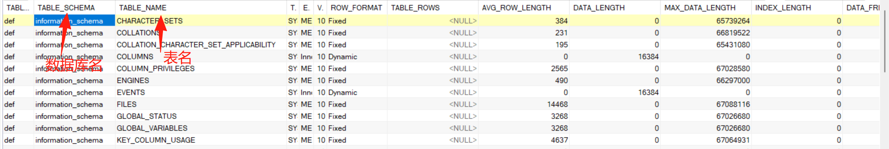

web漏洞-SQL注入(1)
sql基础知识
SQL基础知识
什么是SQL
SQL是一种用于管理和操作关系数据库的标准语言，包括数据查询、数据插入、数据更新、数据删除、数据库结构创建和修改等功能。
sql可以用在所有关系型数据库，例如：MySQL，Oracle等，在不同类型的数据库中sql语法可能略有不同，因此在分析sql漏洞时要尽量先获取数据库信息。
数据库
什么是数据库
简单来讲，数据库就是用来存储数据的仓库。
例如一个网站的用户信息（账号、密码）会存放在一个数据库中以便登录等
数据库架构
不同类型的数据库架构略有不同
mysql |
一个数据库下可以有多个表，其实和excel表格很像，一个excel文件（数据库）下可以有多个工作表（表），每个工作表（表）又有许多表头（列），然后每个格都可以存储数据。
Access |
Access比mysql少了一级，所以用字典猜表名列名较困难
数据库用户
数据库架构还有一个重要的部分就是数据库用户，access数据库就没有数据库用户，以mysql为例。
mysql有内置默认管理员用户root，有最高权限
不同用户拥有不同权限，数据库级可以对数据库操作、表级、列级可能只有查询所在列信息的权限，因此获得高权限对sql注入更有效。root用户可以进行跨库查询注入等
sql简单注入
获取相关数据
- 数据库版本:mysql5.0以上自带数据库information_schema –version()
- 数据库用户:是否符合root用户的注入 –user()
- 当前操作系统:是否支持大小写或文件路径选择 --@@version_compile_os
- 数据库名字:指定库下查表 – database()
mysql5.0以上自带数据库information_schema:
information_schema:储存数据库下的数据库名、表名、列名等信息的数据库
information_schema.tables(数据库中的 . 号是下一级):记录表名信息的表
information_schema.columns:记录列名信息的表

基础步骤
猜字段
sql中uion语句需要确保前后select语句的列数一致，所以猜字段很重要
union order by x直到报错，但是不是很好用，我一般会看题目给的页面大致猜一下，还在学习中:smile:
查看返回页面
不是每一个字段都会在页面里显示出来，union select 1,2,3…可以看到哪个字段会显示出来
搜集基础信息
会显示出来的字段就可以用来搜索关键信息，假设字段1,2位置会显示
本数据库名、用户名：union select database(),user(),3,4..
查询指定数据库下的表名信息
' and 0 union select 1,table_name,3 from information_schema.tables where table_schema='news'#
记得闭合引号和注释最后的引号
查询指定表名下列名的信息
' and 0 union select 1,group_concat(column_name),3 from information_schema.columns where table_name='flag'#
group_concat是为了把多个集中在一起
查询指定数据
' and 0 union select 1,列名,3 from 表名#
跨库注入
跨库注入和基础注入几乎没区别，跨库就是以root或高权限用户从该网站对应的数据库A，查询其他网站对应的数据库
需要root用户（高权限的） |